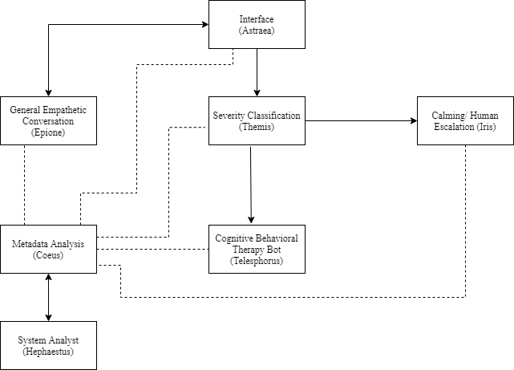

Eleos (In Progress)

Seeking to learn and apply state-of-the-art research in natural language processing, particularly in the domain of conversational agents, multiclass classification, and sentiment analysis especially as they relate to combating mental health, I designed the basic architecture of Eleos as a tool for facilitating conversation which would require high emotional intelligence. As shown in the image above, Eleos is a collective system of 7 NLP components namely that each implements its own NLP or ML system. By nature of the problem which Eleos aims to tackle, the scope of the project is quite large and there is definitely ample room for improving each component. The idea behind this first iteration of Eleos or Eleosv1.0 is to create a system that can perform cohesively and achieve considerably satisfactory conversations with a user. Eleos is named after the Greek Goddess of compassion with the same name. It is my contention that giving Eleos a personality and a name will help increase the belief in the emotional responses she will convey to the user. I have also listed the individual components of Eleos and their functions below.
-
Themis
As the multiclass severity classification system, Themis is the heart of Eleos. Named after the Greek Goddess of Good counsel, She detects the severity of the user's message and decides the next course of action. (In development)
-
Telesphorus
Telesphorus along with Epione form the brain of Eleos. Telesphorus is the cognitive behavioral therapy bot that will help the user deal with issues that Themis rates as mild severity. CBT is a powerful tool for counseling and is also taking a lot of interest among other researchers in the intersection between AI and Psychotherapy. Telesphorus is the demi-god of convalescence which is the mission of this component as well. Telesphorus along with Epione form the brain of Eleos. Telesphorus is the cognitive behavioral therapy bot that will help the user deal with issues that Themis rates as mild severity. CBT is a powerful tool for counseling and is also taking a lot of interest among other researchers in the intersection between AI and Psychotherapy. Telesphorus is the demi-god of convalescence which is the mission of this component as well.
-
Epione
Epione is the Goddess of soothing pain. Within Eleos, Epione forms the general empathetic conversation component of Eleos. Epione works on making general conversation with the user when Themis rates the user's mental state as having low to no severity. The aim of Epione is to learn and implement the latest research in general conversation agents.
-
Iris
In Greek Mythology, Iris is a messenger of the Gods to the humans. Within Eleos, Iris is the calming and human escalation system that allows a qualified therapist to deal with the user when the user's mental state has been deemed to be high to extremely severe by Themis. This is a natural component of any NLP or ML system that aims to solve problems in the mental health domain.
-
Coeus
Eleos requires constant analysis to ensure that there are no issues, especially concerning any component that deals with the user directly or indirectly. Coeus is the Greek God of intelligence and foresight and within Eleos he forms a system that will constantly perform an evaluation of Eleos as a whole.
-
Hephaestus
As the God of assistance, Hephaestus forms the output of the analysis performed by Coeus. Its aim is to act as detailed and robust chatbot which can answer analytically and respond to any FAQs of the user and admins.
-
Astraea
Astraea forms the interface of Eleos. As a pure user-facing system, the idea of Astraea is to create a calm and inviting atmosphere for the user to interact with Eleos.